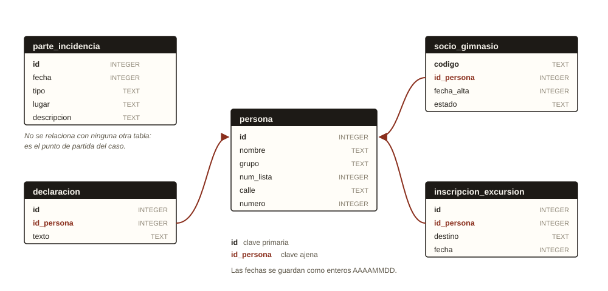

El caso
El 5 de marzo de 2026 desapareció de la vitrina del hall del instituto el trofeo del concurso de robótica. Jefatura de estudios abrió un parte de incidencia, pero el parte se ha traspapelado entre los cientos que hay en la base de datos del centro.
Tu trabajo es encontrar ese parte, seguir las pistas que contiene y averiguar quién se llevó el trofeo. Cuando creas saberlo, comprueba tu respuesta en la última sección de la página.
Las fechas se guardan como números enteros con el formato AAAAMMDD.
Por ejemplo, el 5 de marzo de 2026 se escribe 20260305.
Cómo se resuelve
Cada pista está en una tabla distinta y se obtiene con una consulta a una sola
tabla. El truco consiste en encadenar: sacas un dato de una consulta,
lo apuntas y lo usas en la siguiente. No necesitas JOIN en ningún momento.
- Localiza el parte de incidencia del robo en
parte_incidencia. - Léelo con atención: te dice cómo identificar a los dos testigos.
- Busca a esos testigos en
personay apunta susid. - Consulta sus declaraciones en
declaracion. - Cada declaración apunta a una tabla distinta. Cruza los resultados a mano.
Recordatorio de comandos SQL
| Para… | Se escribe |
|---|---|
| Ver una tabla entera | SELECT * FROM persona; |
| Ver solo algunas columnas | SELECT nombre, grupo FROM persona; |
| Filtrar filas | SELECT * FROM persona WHERE grupo = '2ESO-A'; |
| Varias condiciones a la vez | … WHERE grupo = '2ESO-A' AND numero > 20; |
| Texto que empieza por algo | … WHERE nombre LIKE 'Marisol%'; |
| Texto que contiene algo | … WHERE texto LIKE '%gimnasio%'; |
| Ordenar de mayor a menor | … ORDER BY num_lista DESC; |
| Quedarte solo con la primera fila | … ORDER BY num_lista DESC LIMIT 1; |
| Buscar entre varios valores | … WHERE id_persona IN (12, 45, 78); |
| Contar filas | SELECT COUNT(*) FROM persona; |
El texto entre comillas distingue mayúsculas de minúsculas y tildes:
'Cordoba' no es lo mismo que 'córdoba'. En esta base de datos
ningún dato lleva tilde.
Esquema de la base de datos
Estas son las tablas del centro y cómo se relacionan entre sí. Fíjate en que
declaracion, socio_gimnasio e inscripcion_excursion
guardan un id_persona: es la clave ajena que apunta al id de
persona.

Editor SQL
Escribe aquí tus consultas y pulsa Ejecutar (o Mayús + Intro). Puedes usar este editor tantas veces como quieras: borra la consulta anterior y prueba otra.
¿Atascado? Abre las pistas de una en una, solo cuando de verdad las necesites.
Pista 1 · No encuentro el parte del robo
Con la fecha sola salen varias filas. Añade dos condiciones más con AND:
el tipo de incidencia que buscas es 'robo' y el
lugar es 'Hall del instituto'.
Saldrán dos partes. Uno de ellos no sirve: fíjate en cuál tiene una descripción de verdad.
Pista 2 · No sé identificar a los testigos
El primer testigo es de 1BACH-B y tiene el num_lista más alto
de su grupo: filtra por el grupo, ordena con ORDER BY num_lista DESC y
quédate con la primera fila usando LIMIT 1.
La segunda testigo se llama Marisol, pero hay varias en el instituto. Combina
nombre LIKE 'Marisol%' con la calle en la que vive.
Pista 3 · Ya tengo los testigos, ¿y ahora?
Apunta el id de cada uno y búscalos en la tabla de declaraciones:
SELECT texto FROM declaracion WHERE id_persona = …;
Una declaración te da el principio de un código de la tabla
socio_gimnasio. La otra te da un destino y una fecha de la tabla
inscripcion_excursion.
Pista 4 · Tengo las dos listas y no sé cruzarlas
Saca primero los seis socios cuyo código empieza por GB7 y apunta sus
id_persona. Solo una de esas seis personas fue a la excursión.
Puedes comprobarlo de dos maneras: lanzando seis consultas (una por candidato) o,
más rápido, con IN: filtra la excursión y añade
AND id_persona IN (…) con los seis números separados por comas.
Comprueba tu solución
Sustituye el texto entre comillas por el nombre completo de tu sospechoso y ejecuta las dos sentencias juntas.